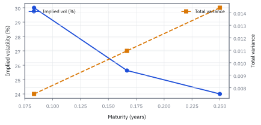

13.5 The Volatility Surface and Term Structure
ต่อความแกว่งหลายราคาและหลายอายุโดยไม่เปิดช่องเงินฟรี
ความแกว่งหนึ่งเดือนกับสามเดือนไม่ได้ต่อกันด้วยไม้บรรทัดเส้นตรง; ค่ากลางของสองเปอร์เซ็นต์คือคำตอบของสองเดือนหรือไม่?
เฉลย: ค่ากลางของ volatility หนึ่งเดือนกับสามเดือนไม่ใช่คำตอบของสองเดือน เพราะ option สะสม variance ตามเวลา
เปอร์เซ็นต์ไม่ใช่เลโก้: ต่อ volatility surface ผิดชิ้นแล้ว calendar spread จะฟ้องทันที
ศัพท์ชุดแรก: พิกัดที่ใช้วางราคาทั้งหน้าจอลงบนผืนเดียว
- volatility surface
-
คืออะไร: ตารางของ implied volatility ทุกค่า เรียงตาม strike ในแนวหนึ่ง และตามอายุที่เหลือในอีกแนวหนึ่ง มองเป็นผืนผ้าหนึ่งผืน
ใช้ทำอะไร: ใช้ตั้งราคาสัญญาที่ไม่มีคนซื้อขาย โดยอ่านค่าจากตำแหน่งใกล้เคียง
ทำไมต้องมองรวมเป็นผืนเดียว: เพราะราคาแต่ละใบบนหน้าจอไม่ได้เป็นอิสระต่อกัน ถ้าอ่านทีละใบจะมองไม่เห็นว่าใบไหนขัดกับใบอื่นจนสร้างเงินฟรีได้
- smile slice
-
คืออะไร: หน้าตัดหนึ่งแถวของผืนนั้น คือทุก strike ที่อายุเดียวกัน
ใช้ทำอะไร: เป็นหน่วยที่เราตรวจความสอดคล้องภายในก่อน แล้วค่อยตรวจข้ามแถว
ทำไมต้องแยกดูทีละแถว: เพราะเงื่อนไขคนละข้อคุมคนละทิศ ความโค้งภายในแถวคุมเรื่องหนึ่ง ส่วนการเรียงข้ามแถวคุมอีกเรื่องหนึ่ง
- term structure
-
คืออะไร: การที่ implied volatility เปลี่ยนไปตามอายุที่เหลือ เช่นสัญญาหนึ่งเดือนอาจสูงกว่าสัญญาหนึ่งปี
ใช้ทำอะไร: ใช้อ่านว่าตลาดคิดว่าความปั่นป่วนอยู่ช่วงไหน ใกล้หรือไกล
ทำไมต้องดู: เพราะก่อนวันประกาศผลประกอบการ ตัวสั้นจะพุ่งขึ้นตัวเดียว รูปทั้งเส้นจึงบอกได้ว่าตลาดกำลังกลัวเหตุการณ์ไหนอยู่
- constant maturity
-
คืออะไร: การรายงานค่าที่อายุคงที่ เช่นสามสิบวันเสมอ ทั้งที่สัญญาจริงบนหน้าจอสั้นลงทุกวัน
ใช้ทำอะไร: ใช้เทียบระดับ volatility ของวันนี้กับเมื่อวานได้ตรง ๆ
ทำไมต้องใช้: เพราะถ้าไม่ปรับ เราจะเห็นค่าขยับทุกวันจากการที่สัญญาแก่ลง ทั้งที่ตลาดไม่ได้เปลี่ยนใจอะไรเลย
- forward moneyness
-
คืออะไร: การเทียบ strike กับ forward ของอายุนั้น ไม่ใช่กับราคาวันนี้
ใช้ทำอะไร: ใช้จัดให้จุดกึ่งกลางของทุกแถวอยู่ตรงกัน ก่อนเอามาวางซ้อนกัน
ทำไมต้องเทียบกับ forward: เพราะดอกเบี้ยและปันผลดันจุดกึ่งกลางของแต่ละอายุ ไปคนละที่ การเทียบกับราคาวันนี้จึงทำให้แถวยาวเลื่อนออกโดยไม่มีเหตุผลจริง
- log-moneyness
-
คืออะไร: การเขียนตำแหน่งนั้นเป็น $k=\log(K/F)$
ใช้ทำอะไร: เป็นแกนนอนมาตรฐานของทั้งหัวข้อ
ทำไมต้องใช้ log: เพราะทำให้ระยะห่างเท่ากันทั้งซ้ายและขวา อัตราส่วนสองเท่าและครึ่งหนึ่งอยู่ห่างจากศูนย์เท่ากันพอดี
- total variance
-
คืออะไร: implied variance คูณด้วยเวลาที่เหลือ เขียนเป็น $w=\sigma_{\rm imp}^{2}T$
ใช้ทำอะไร: ใช้เป็นแกนตั้งแทน volatility ตอนเชื่อมค่าระหว่างสองอายุ
ทำไมต้องเปลี่ยนมาใช้ตัวนี้: เพราะมันคือปริมาณที่สะสมขึ้นตามเวลา การเชื่อมค่าบนแกนที่สะสมได้จึงมีความหมาย ส่วนการเชื่อมบน volatility ตรง ๆ อาจสร้างช่วงที่ความไม่แน่นอนหดหายไปเอง ซึ่งเป็นไปไม่ได้
- forward variance
-
คืออะไร: variance ที่เพิ่มขึ้นระหว่างสองอายุ คือความชันของ total variance
ใช้ทำอะไร: ใช้ตรวจว่าช่วงเวลาข้างหน้าแต่ละช่วงยังมีความไม่แน่นอนเป็นบวก
ทำไมต้องดู: เพราะเส้น volatility ที่ดูเรียบตาอาจซ่อนช่วงที่ค่านี้ติดลบอยู่ และค่าติดลบแปลว่าราคาบนหน้าจอสร้างเงินฟรีได้จริง
สัญลักษณ์ที่ใช้ในหัวข้อนี้
| สัญลักษณ์ | ความหมาย | หน่วย |
|---|---|---|
| $S_0$ | ราคาหุ้นวันนี้ | USD |
| $K$ | strike ของสัญญาที่กำลังพิจารณา | USD |
| $F(T)$ | ราคาส่งมอบสำหรับอายุ $T$ เป็นจุดกลางของแถวนั้น | USD |
| $k=\log(K/F(T))$ | ตำแหน่งของ strike บนแกนที่เทียบข้ามอายุได้ ศูนย์แปลว่าอยู่ตรงกลางพอดี | ไม่มีหน่วย |
| $r$ | อัตราดอกเบี้ยไร้ความเสี่ยง | ปี⁻¹ |
| $q$ | อัตราเงินปันผลต่อเนื่อง | ปี⁻¹ |
| $T$ | อายุที่กำลังพิจารณา | ปี |
| $T_1$ | อายุของแถวที่สั้นกว่า ซึ่งใช้เป็นขอบล่างตอนเชื่อมค่า | ปี |
| $T_2$ | อายุของแถวที่ยาวกว่า ซึ่งใช้เป็นขอบบน | ปี |
| $\sigma_{\rm imp}(k,T),w(k,T)$ | implied volatility และ total variance | ปี⁻¹ᐟ², ไม่มีหน่วย |
| $v_{12},\sqrt{v_{12}}$ | annualized forward variance ระหว่าง $T_1,T_2$ และ forward volatility | ปี⁻¹, ปี⁻¹ᐟ² |
| $D=e^{-rT}$ | ตัวคิดลดกลับมาเป็นเงินวันนี้ | ไม่มีหน่วย |
| $x=K/F$ | ระยะห่างของ strike จาก forward ในรูปอัตราส่วน | ไม่มีหน่วย |
| $c(x,T)=C/(DF)$ | ราคา call ที่หารหน่วยเงินทิ้งแล้ว จึงเทียบข้ามอายุและข้ามหุ้นได้ | ไม่มีหน่วย |
| $C(K,T)$ | ราคา call ที่ strike และอายุนั้น | USD |
| $C_K$ | ราคาเปลี่ยนเท่าไรเมื่อ strike ขยับ ค่านี้ต้องติดลบเสมอ | ไม่มีหน่วย |
| $C_{KK}$ | ความโค้งของราคาตาม strike ค่านี้ต้องเป็นบวกเสมอ | USD⁻¹ |
| $f^{\mathbb Q}(K)$ | density ของราคาปลายทาง ซึ่งเท่ากับความโค้งข้างบนพอดี จึงเป็นเหตุผลที่ความโค้งติดลบไม่ได้ | USD⁻¹ |
| $h,\mathbb Q$ | ระยะ strike grid และ risk-neutral measure | จุด SPX, ไม่มีหน่วย |
| $D(K,T)$ | ราคาของ digital option ที่จ่าย 1 USD เมื่อ $S_T > K$ | |
| $\Pi_T$ | payoff ของกลยุทธ์ butterfly spread ณ วันหมดอายุ |
ที่มาที่ไป: รอยยิ้มที่โผล่มาหลังตลาดพังในปี 1987
ก่อนเดือนตุลาคม 1987 ราคา option ในตลาดค่อนข้างตรงกับสูตร คือความผันผวนที่แกะได้จากราคา ใกล้เคียงกันไม่ว่าจะเป็น strike ไหน
หลังจากตลาดหุ้นสหรัฐฯ ร่วงกว่ายี่สิบเปอร์เซ็นต์ในวันเดียว ภาพนั้นเปลี่ยนไปถาวร สัญญาที่ป้องกันการร่วงแรงมีราคาแพงขึ้นอย่างชัดเจนเมื่อเทียบกับที่สูตรบอก
รูปแบบที่เหลือไว้คือกราฟที่โค้งขึ้นทั้งสองข้าง ซึ่งคนเรียกว่ารอยยิ้ม และมันไม่เคยหายไปอีกเลย
รอยยิ้มจึงไม่ใช่ข้อบกพร่องเล็กน้อยของสูตร แต่เป็นหลักฐานที่ตลาดบอกทุกวันว่า สมมติฐานเรื่องความผันผวนคงที่และหางบางนั้นผิด
Worked Example — โจทย์และสิ่งที่ให้มา
โจทย์ให้อะไรมาบ้าง: ให้ SPX spot 5,000 จุด, อัตราดอกเบี้ย 4% ต่อปี, dividend yield 1.5% ต่อปี และ at-forward implied volatility 30% ที่อายุ 1 เดือนกับ 24% ที่อายุ 3 เดือน ต้องรายงานค่า 2 เดือนและยืนยันว่า interpolation ไม่สร้าง calendar arbitrage
ในระบบจริงแต่ละ quote ต้องมี timestamp, bid, ask, strike, expiry timestamp, settlement convention และ forward source เราใช้ midquote สังเคราะห์เพื่อแสดงคณิตศาสตร์ จึงยังไม่กล่าวว่า surface นี้ซื้อขายได้
ขั้นที่ 1 — นิยามของแกนใหม่: forward กับ total variance
สามก้อนนี้เป็น นิยาม ของแกนที่เราเลือกใช้ ไม่ใช่ผลที่พิสูจน์ เหตุผลที่เปลี่ยนแกนมีสองข้อ ข้อแรก strike ดิบเทียบข้ามอายุไม่ได้ เพราะราคาส่งมอบล่วงหน้าของแต่ละอายุไม่เท่ากัน การวัดระยะจากราคานั้นจึงยุติธรรมกว่า ข้อสอง ความเหวี่ยงไม่ใช่ปริมาณที่สะสมตามเวลา สิ่งที่สะสมได้คือกำลังสองของมันคูณเวลา ซึ่งเป็นผลจากหัวข้อ 10.1 ที่ variance ของ Brownian บวกกันได้ตรง ๆ
forward กำจัด deterministic carry ออกจากแกน strike และ total variance เป็น quantity ไม่มีหน่วยที่สะสมตามเวลา
ขั้นที่ 2 — แปลง quote ปลายช่วงเป็น total variance
แปลงราคาที่ตลาดบอกให้อยู่บนแกนใหม่ก่อน
แม้ volatility ลดจาก 30 เป็น 24 เปอร์เซ็นต์ total variance ยังเพิ่มจาก 0.0075 เป็น 0.0144 เพราะอายุยาวขึ้น
ขั้นที่ 3 — ถอด variance ของช่วงเดือนสองถึงสาม
ผลต่าง total implied variance หารระยะเวลาที่คั่นกลางเป็น forward variance ที่อนุมานจากสองอายุสัญญานี้ ภายใต้เงื่อนไขป้องกัน calendar arbitrage ที่ใช้ในตัวอย่าง ค่านี้ต้องไม่ติดลบ และไม่ควรตีความเป็นคำทำนาย realized variance ของช่วงนั้นโดยไม่มีสมมติฐานเพิ่ม
ทีละชิ้น: $0.0144-0.0075=0.0069$ ส่วน $3/12-1/12=2/12=0.166667$ ปี เอา 0.166667 มาหาร 0.0069 ได้ 0.0414 และ $\sqrt{0.0414}=0.203470$
forward variance เป็น 0.0414 ต่อปีและ forward volatility ประมาณ 20.3470 เปอร์เซ็นต์ต่อรากปี ค่าบวกแปลว่า total variance ไม่ย้อนลงระหว่างสองอายุในตัวอย่างนี้
ขั้นที่ 4 — interpolate 2 เดือนบนแกนสะสม
เชื่อมค่าที่อายุซึ่งไม่มีในตลาด โดยเชื่อมบนแกนสะสม ไม่ใช่เชื่อม volatility ตรง ๆ
ตัวถ่วง: $(2/12-1/12)/(3/12-1/12)=(1/12)/(2/12)=0.5$ คูณช่วง 0.0069 ได้ 0.00345 บวก 0.0075 ได้ 0.01095
สองเดือนอยู่กึ่งกลางช่วงเวลา จึงเชื่อม total variance ได้ 0.01095 ไม่ใช่เชื่อม volatility ตรง
ขั้นที่ 5 — แปลงกลับเป็น implied volatility
แปลงกลับเป็นหน่วยที่โต๊ะคุยกัน แล้วเทียบกับวิธีเชื่อมแบบง่ายจะเห็นว่าต่างกันจริง
$0.01095/(2/12)=0.01095\times6=0.0657$ แล้ว $\sqrt{0.0657}=0.256320$ ส่วนวิธีเชื่อมตรง ๆ คือ $(30+24)/2=27$
ค่า constant maturity สองเดือนเป็น 25.6320 เปอร์เซ็นต์ต่อรากปี ต่ำกว่า linear volatility interpolation 27 เปอร์เซ็นต์อยู่ 1.368 จุดเปอร์เซ็นต์
ขั้นที่ 6 — ตัวอย่างที่เชื่อม volatility ตรง ๆ แล้วสร้างเงินฟรี
ดูว่าการเชื่อมผิดแกนพังอย่างไร เปลี่ยนตัวเลขสามเดือนให้ต่ำลงหน่อยแล้วเชื่อมสองวิธี
เปลี่ยน quote สามเดือนเป็น 18% เชื่อม volatility ตรง ๆ ให้สองเดือน 24% ฟังดูสมเหตุสมผล แต่ total variance ที่สองเดือน (0.0096) สูงกว่าที่สามเดือน (0.0081) แปลว่าความไม่แน่นอน ‘ลดลง’ ระหว่างเดือนสองถึงสาม ซึ่งเป็นไปไม่ได้
ราคาที่ได้จะให้ option สองเดือนแพงกว่าสามเดือน (หลังปรับ forward) ขาย option สั้น ซื้อ option ยาว ได้เงินฟรี นี่คือเงินฟรีตามแกนเวลา ซึ่งศัพท์ชุดถัดไปจะตั้งชื่อให้
เชื่อมบน total variance แทน ได้ 21.63% และ forward variance บวก: (0.0081 − 0.0078) ต่อหนึ่งเดือน = 0.0036 ต่อปี ปลอดภัย
แล้วเอาไปใช้ทำอะไรได้จริงบ้าง
การต่อความผันผวนหลายราคาและหลายอายุให้เป็นผืนเดียว เป็นงานประจำวันของโต๊ะ option
ใช้ตั้งราคาสัญญาที่ strike หรืออายุไม่ตรงกับที่มีในตลาด ซึ่งเป็นกรณีส่วนใหญ่ของลูกค้า
ใช้ตรวจว่าราคาที่โต๊ะเสนอไม่เปิดช่องให้ลูกค้าทำกำไรฟรี ซึ่งเป็นข้อบังคับที่ระบบต้องตรวจอัตโนมัติ
ใช้อ่านว่าตลาดกำลังคิดอะไร เพราะรูปร่างของผืนนี้บอกความกังวลของตลาดต่อการร่วงแรง
ภาพ 13.5a — Volatility ลดได้ขณะที่ total variance เพิ่ม

กราฟซ้ายในแกนเดียวแสดง volatility 30%, 25.632% และ 24% ส่วนเส้น total variance เพิ่มจาก 0.0075 เป็น 0.0144 ตลอด การตรวจ calendar ด้วยระดับ volatility อย่างเดียวจึงผิดพิกัด
ศัพท์ชุดที่สอง: เงื่อนไขที่ผืนต้องผ่าน ไม่ใช่แค่ต้องสวย
- calendar spread arbitrage
- calendar spread arbitrage คือความผิดปกติที่ option อายุยาวมีมูลค่าน้อยกว่าสัญญาอายุสั้นหลัง normalize strike กับ forward อย่างถูกต้อง ใช้ตรวจความสอดคล้องข้าม maturity
- butterfly arbitrage
-
คืออะไร: การที่ราคาของ strike สามค่าเรียงกันแล้วให้ต้นทุนติดลบ ทั้งที่เงินรับไม่มีทางติดลบ
ใช้ทำอะไร: ใช้เป็นการตรวจภายในแต่ละแถวว่าราคายังสมเหตุสมผล
ทำไมต้องตรวจ: เพราะมันเทียบเท่ากับการบอกว่าความน่าจะเป็นบางช่วงติดลบ ซึ่งไม่ใช่แค่ไม่สวย แต่ผิดโดยสิ้นเชิง
- convexity
-
คืออะไร: เงื่อนไขที่ราคาเมื่อวาดตาม strike ต้องโค้งขึ้นเสมอ
ใช้ทำอะไร: เป็นรูปคณิตศาสตร์ของข้อตรวจข้างต้น
ทำไมต้องเป็นแบบนี้: เพราะความชันสองครั้งของราคาตาม strike คือ density ของความน่าจะเป็น และ density ติดลบไม่ได้
- static arbitrage
- static arbitrage คือกำไรที่ล็อกได้ด้วยพอร์ตตั้งต้นแล้วถือโดยไม่ rebalance ใช้เป็น hard constraint ก่อนพิจารณาความสวยของ fit
- interpolation
-
คืออะไร: การเติมค่าในช่องว่างที่อยู่ *ระหว่าง* จุดข้อมูลที่มีจริง
ใช้ทำอะไร: ใช้ตอบราคาของอายุที่ไม่มีสัญญาซื้อขายอยู่ เช่นสองเดือนพอดี
ทำไมต้องระวัง: เพราะคำตอบขึ้นกับว่าเราเชื่อมบนแกนไหน เชื่อมบน total variance กับเชื่อมบน volatility ให้คำตอบต่างกัน และแบบหลังอาจสร้างความผิดปกติขึ้นมาเอง
- extrapolation
-
คืออะไร: การเดาค่าที่อยู่ *นอก* ช่วงข้อมูลที่มี เช่นปีกที่ไกลกว่าทุก strike ที่ซื้อขาย
ใช้ทำอะไร: ใช้เติมหางของผืนเพื่อให้ตั้งราคาสัญญาสุดโต่งได้
ทำไมต้องระวังกว่า: เพราะไม่มีข้อมูลคอยเหนี่ยวรั้ง ค่าที่ได้จึงมาจากการเลือกรูปแบบล้วน ๆ และเป็นจุดที่แบบจำลองพังบ่อยที่สุด
- martingale
-
คืออะไร: กระบวนการที่ expected value ในอนาคต เมื่อรู้ข้อมูลถึงวันนี้แล้ว เท่ากับค่าวันนี้พอดี
ใช้ทำอะไร: เป็นเงื่อนไขที่ราคาที่ปรับหน่วยแล้วต้องเป็น ถ้าตลาดไม่มีเงินฟรี
ทำไมต้องรู้ตรงนี้: เพราะเงื่อนไขการเรียงข้ามอายุที่เราตรวจในขั้นที่ 7 คือรูปหนึ่งของเงื่อนไขนี้ ไม่ใช่กฎที่ตั้งขึ้นลอย ๆ
- arbitrage-free smoothing
-
คืออะไร: การหาเส้นเรียบที่ลากผ่านราคาตลาด โดยบังคับให้รักษาเงื่อนไข การเรียงและความโค้งไว้ตลอด
ใช้ทำอะไร: ใช้สร้างผืนที่ใช้ตั้งราคาได้จริง ไม่ใช่แค่ผ่านจุดสวย
ทำไมต้องบังคับ: เพราะวิธีหาเส้นเรียบทั่วไปไม่รู้จักเงื่อนไขพวกนี้ มันจะให้เส้นที่สวยกว่าและผิดกว่า
- digital option
- option ที่จ่ายเงินก้อนคงที่ถ้าราคาจบเหนือระดับที่กำหนด และจ่ายศูนย์ถ้าไม่ถึง ใช้เดิมพันทิศทางแบบตรงไปตรงมา และใช้อ่านความน่าจะเป็นที่ตลาดกำลังคิดอยู่ได้โดยตรง
- butterfly spread
- ชุด option สามขาที่ซื้อปีกสองข้างและขายตรงกลาง ใช้ทำกำไรเมื่อราคาอยู่นิ่งใกล้จุดกลาง และใช้วัดความโค้งของ smile ที่ระดับราคานั้น
- skew
- ความไม่สมมาตรของ implied volatility ระหว่างฝั่งราคาต่ำกับฝั่งราคาสูง ใช้บอกว่าตลาดกลัวขาลงมากกว่าขาขึ้นแค่ไหน และเป็นตัวตั้งราคาของ option ป้องกันขาลง
Calendar condition ที่เข้มกว่าการดู at-forward เพียงเส้น
การเพิ่มของ $w(0,T)$ เป็น diagnostic ที่มีประโยชน์ แต่ surface ทั้งแผ่นต้องตรวจ option price ที่ forward moneyness คงที่ เพราะ forward และ discount เปลี่ยนตามอายุ ภายใต้ deterministic rates และ dividends ราคาที่ normalize แล้วควรไม่ลดตาม maturity
ขั้นที่ 7 — เขียน calendar test บน normalized call
ตั้งกฎที่ตรวจได้ว่าผิวนี้ไม่เปิดช่องทำเงินฟรีตามแกนเวลา
จับ x คงที่แทน K ดิบ แล้ว normalize ด้วย discounted forward เพื่อเทียบ payoff ของ martingale เงื่อนไข maturity derivative ไม่ติดลบห้าม calendar spread ราคาผิดทิศ
ภาพ 13.5b — Smile slices ต้องเทียบที่ log-moneyness เดียวกัน

พื้นผิวสังเคราะห์มี skew ทาง strike สูงและปีกโค้งขึ้น โดยแต่ละเส้นคืออายุหนึ่ง ค่าเป็น deterministic training surface ไม่ใช่ข้อมูลตลาด; จุดประสงค์คือแสดงพิกัด $k$ ที่ตรึง forward
ภาพ 13.5c — Forward variance เปิดโปง calendar ที่ซ่อนในเส้นเรียบ

เส้นน้ำเงินมี total variance เพิ่มและ forward variance บวก ส่วนเส้นแดงลดลงช่วงปลายจึงให้ forward variance ติดลบ แม้ทั้งสองเส้นมองด้วยตาแล้วเรียบ การ smooth จึงไม่ใช่ arbitrage test
ขั้นที่ 8 — ตรวจ strike monotonicity และ convexity
ตรวจอีกสองกฎตามแกน strike ราคาต้องลดลงเมื่อ strike สูงขึ้น และต้องโค้งขึ้น
call ต้องลดตาม strike ด้วย slope อยู่ระหว่างลบ discount factor กับศูนย์ และต้อง convex ผลต่างจำกัดสาม strike จึงห้ามติดลบ
ขั้นที่ 9 — ตัวอย่าง butterfly ที่ผิด
แสดงกรณีที่ผิดจริงหนึ่งกรณี จะได้รู้ว่าเวลาเจอของเสียหน้าตาเป็นอย่างไร
long wing calls และ short 2 หน่วยที่ strike กลางมีต้นทุน −1 SPX point ทั้งที่ payoff ของ butterfly ไม่ติดลบ จึงเป็น static arbitrage ก่อน costs
payoff ของชุดนี้ที่ปลายทาง 5,000: ขาซ้ายจ่าย 100 ขากลางจ่าย 0 ขาขวาจ่าย 0 รวม 100 ที่ 5,100: 200 − 2(100) + 0 = 0 ต่ำกว่า 4,900 หรือสูงกว่า 5,100 ก็เป็นศูนย์ payoff จึงไม่ติดลบเลย แต่ต้นทุนกลับติดลบ 1 จุด คือได้เงิน 1 จุดวันนี้ แถมสิทธิ์ที่อาจจ่ายถึง 100
ขั้นที่ 10 — ที่มาของ Breeden–Litzenberger: ถอด probability density จาก butterfly spread
หัวข้อก่อนหน้ากำหนดให้ราคา call ต้อง convex เพื่อไม่ให้เกิด butterfly arbitrage แต่ความสัมพันธ์ระหว่างราคา call กับ probability density แท้จริงแล้วลึกซึ้งกว่านั้น Douglas Breeden และ Robert Litzenberger (1978) แสดงให้เห็นว่าเราสามารถถอด risk-neutral density ออกมาจากราคาตลาดได้โดยตรง
หัวใจคือการซื้อ call ปีกสองข้างและขายสองหน่วยที่ strike ตรงกลาง เมื่อช่วงห่าง $\Delta K$ เล็กมาก พอร์ตโฟลิโอนี้จะทำตัวเสมือนเข็มฉีดยาที่คัดกรองเฉพาะสถานะที่หุ้นจบใกล้ $K$ สูตรนี้เปิดเผยว่า implied volatility surface ไม่ใช่แค่ตารางตัวเลข แต่คือรูปทรง distribution ของราคาหุ้นในอนาคตที่ตลาดประเมินไว้
กลยุทธ์ butterfly spread สร้าง payoff รูปกระโจมสามเหลี่ยมที่มีฐานกว้าง $2\Delta K$ และสูง $\Delta K$ เมื่อระยะห่างของ strike บีบแคบลงจนเป็นช่วงสั้น ค่า density ของราคาหุ้นจะคงที่เกือบเท่ากันตลอดฐานรูปสามเหลี่ยม
พื้นที่ใต้กระโจมคือครึ่งหนึ่งของฐานคูณสูง ซึ่งคำนวณได้ $(\Delta K)^2$ พอดี เมื่อนำราคาตลาดของ option ทั้งสามสัญญามาหักกลบกันและส่วนด้วยพื้นที่ฐานกำลังสอง แล้วส่ง limit ให้ $\Delta K$ เข้าใกล้ศูนย์ ผลต่างอันดับสองจะกลายเป็น derivative อันดับสองของราคาตาม strike
สูตรของ Breeden และ Litzenberger (1978) นี้พิสูจน์ว่าราคา call ที่สังเกตได้จากตลาดบรรจุข้อมูลของราคาหุ้นไว้ทั้งหมด และเนื่องจากความน่าจะเป็นติดลบไม่ได้ ราคา call จึงต้องโค้งหงายเสมอ ($C_{K\,K} \ge 0$) มิฉะนั้นจะมีกำไรไร้ความเสี่ยงทันที
ขั้นที่ 11 — ตั้งราคา digital option ด้วย skew: ตัวอย่าง Gatheral
ในทางปฏิบัติ ผู้ค้า derivative ไม่ได้ใช้สูตร Black–Scholes เดี่ยว ๆ เพื่อตั้งราคา exotic แต่ใช้โครงสร้างของ volatility surface เพื่อสะท้อนความเสี่ยงที่แท้จริง ตัวอย่างที่ชัดเจนที่สุดคือการตั้งราคา digital option หรือสัญญาที่จ่ายผลตอบแทนคงที่หนึ่งหน่วยเมื่อราคาปิดสูงกว่า strike
ความลาดเอียงเชิงลบของ skew สะท้อนว่าตลาดให้ค่าน้ำหนักกับความเสี่ยงขาลงมากกว่าปกติ ส่งผลให้โอกาสที่หุ้นจะจบต่ำกว่า strike สูงขึ้น หรืออีกนัยหนึ่งคือความน่าจะเป็นที่หุ้นจะปิดเหนือ strike ต้องถูกปรับแต่งด้วยพจน์ vega คูณ skew เสมอ
สัญญา digital option จ่าย 1 หน่วยเมื่อหุ้นจบเหนือ $K$ มูลค่าของมันคือผลต่างราคา call สองสัญญาที่ strike ห่างกันเล็กน้อย ซึ่งเทียบเท่ากับ derivative ย่อยของราคาตลาดเทียบกับ strike แบบติดลบ
เนื่องจากราคาตลาดดึง implied volatility มาจาก surface กฎลูกโซ่จึงแยกผลลัพธ์เป็นสองส่วน: ส่วนแรกคือ Black–Scholes digital ตามสูตรดั้งเดิม และส่วนที่สองคือผลกระทบจากความลาดเอียงของ skew คูณกับ vega
ตัวเลขจริงจาก Jim Gatheral แสดงให้เห็นความสำคัญ: หากเพิกเฉยต่อ skew ราคา digital จะอยู่ที่ 45 เปอร์เซ็นต์ของ notional แต่เมื่อรวมความลาดเอียงของรอยยิ้มเข้าไป ราคาที่ถูกต้องพุ่งขึ้นเป็น 55 เปอร์เซ็นต์ หากตั้งราคาผิด โต๊ะเทรดจะขาดทุนมหาศาลทันที
ภาพ 13.5d — ราคาที่เรียบยังอาจไม่ convex

สามจุดสีแดงให้ราคากลางสูงกว่าเส้นเฉลี่ยของปีกพอทำให้ second difference เป็น −1 จุด เส้นดูเกือบตรงแต่ butterfly ตรวจพบ violation ที่สายตาพลาด
ทำตามลำดับเพื่อลดสัญญาณเตือนปลอม
เริ่มจากตัด quote ที่ซื้อขายสวนกัน ไม่มีราคาเสนอซื้อ หรือค้างเก่า แต่เก็บช่วง bid–ask ไว้ จากนั้นหา forward กับ discount จาก parity แล้วค่อยใช้ solver ที่มีขอบเขตหา implied volatility
เมื่อได้ quote ที่ใช้ได้ จึงแปลงเป็น log-moneyness กับ total variance แล้ว fit โดยบังคับ calendar และ butterfly constraints สุดท้ายคำนวณราคากลับจาก surface และลองขยับปีกกับอายุสั้นเพื่อดูความไว
ไม่ว่าจะเลือก parameter แบบใด ต้องตรวจ constraints ใน price space ซ้ำทุกจุด เพราะ parameter ที่ดูดีไม่ได้รับรองทั้ง grid และปีกที่ quote บางคือส่วนที่ model เติม ไม่ใช่ข้อมูลจากตลาด
คำตอบ ตรวจเอง และแปลว่าอะไร
คำตอบและความหมาย: จาก 1 เดือน 30% และ 3 เดือน 24% เราได้ 2 เดือน 25.6320% ด้วย linear interpolation ของ total variance และ forward volatility ช่วงเดือนสองถึงสาม 20.3470% จากนั้นยังต้องตรวจทุก $k$ ไม่ใช่เฉพาะ at-forward จุดเดียว ก่อนให้ pricing engine ใช้ surface
ตรวจเองใน 10 วินาที: total variance 1 เดือนคือ $0.30^{2}/12=0.0075$ และ 3 เดือนคือ $0.24^{2}\times3/12=0.0144$; เชื่อมกึ่งกลางแล้วแปลงกลับต้องได้ 25.6320%. ใช้ตรวจ calendar slice ก่อนส่ง surface เข้า pricing engine.
กับดัก: เส้นสวยจึงคิดว่าปลอด arbitrage
cubic spline สามารถวาดเส้นเนียนราวกับโฆษณาแชมพูและยังซ่อน density ติดลบได้ วิธีป้องกันคือให้ราคาและ total variance ผ่าน inequalities เชิงเศรษฐศาสตร์บน dense grid แล้วตรวจซ้ำหลัง interpolation กับ extrapolation ทุกครั้ง
ข้อจำกัด: วิธีนี้สมมติอะไร และของจริงเป็นอย่างไร
| เรื่อง | วิธีนี้สมมติว่า | ของจริงเป็นอย่างไร | ผลที่ตามมาเวลาใช้งาน |
|---|---|---|---|
| การเชื่อมค่า | เชื่อมระหว่างจุดที่มีข้อมูลได้ | วิธีเชื่อมต่างกันให้ราคาต่างกัน | ราคาที่เสนอขึ้นกับการเลือกวิธีเชื่อม ซึ่งเป็นการตัดสินใจของโต๊ะ ไม่ใช่ข้อมูลจากตลาด |
| ความนิ่ง | ผืนนี้ขยับช้า | มันเปลี่ยนรูปเร็วในวันที่มีข่าว | ราคาที่คำนวณจากผืนของเมื่อวานอาจผิดไปมาก |
| ข้อมูลที่มี | มีราคาครบทุกจุดที่ต้องใช้ | จุดที่ไกลจากราคาปัจจุบันแทบไม่มีการซื้อขาย | ราคาที่ไกลมาก ๆ มาจากการเดาของแบบจำลอง ไม่ใช่จากตลาด |
แถวแรกเป็นเหตุผลที่สองโต๊ะเสนอราคาสัญญาเดียวกันไม่เท่ากัน ทั้งที่ดูข้อมูลชุดเดียวกัน
สรุปที่ใช้ได้จริง
- ใช้ forward log-moneyness เพื่อเทียบ smile ข้าม expiry และใช้ total variance สำหรับการเชื่อมตามเวลา
- ตัวอย่างให้ 2-month implied volatility 25.6320% และ forward volatility 20.3470%
- calendar test ต้องทำที่ normalized forward moneyness คงที่ ไม่ใช่ strike ดิบหรือระดับ volatility อย่างเดียว
- butterfly test คือ monotonicity กับ convexity ของราคา call ตาม strike
- surface production ต้องรักษา bid–ask, constraints, repricing residual และ extrapolation stress ไว้เป็นหลักฐาน